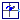
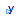
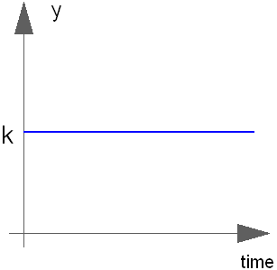

| Name | Description |
|---|---|
| ComplexExpression | Set output signal to a time varying Complex expression |
| ComplexConstant | Generate constant signal of type Complex |
| ComplexStep | Generate step signal of type Complex |
|  ComplexRotatingPhasor | Generate a phasor with constant magnitude and constant angular velocity of type Complex |

The (time varying) Complex output signal of this block can be defined in its parameter menu via variable y. The purpose is to support the easy definition of Complex expressions in a block diagram. Note, that "time" is a built-in variable that is always accessible and represents the "model time" and that Variable y is both a variable and a connector.
| Type | Name | Default | Description |
|---|---|---|---|
| Time varying output signal | |||
| ComplexOutput | y | Complex(0) | Value of Complex output |
| Type | Name | Description |
|---|---|---|
| Time varying output signal | ||
| output ComplexOutput | y | Value of Complex output |
block ComplexExpression "Set output signal to a time varying Complex expression"output Modelica.ComplexBlocks.Interfaces.ComplexOutput y=Complex(0) "Value of Complex output"; end ComplexExpression;
The Complex output y is a constant signal:

Extends from Modelica.ComplexBlocks.Interfaces.ComplexSO (Single Output continuous control block).
| Type | Name | Default | Description |
|---|---|---|---|
| Complex | k | Constant output value |
| Type | Name | Description |
|---|---|---|
| output ComplexOutput | y | Connector of Complex output signal |
block ComplexConstant "Generate constant signal of type Complex" parameter Complex k(re(start=1),im(start=0)) "Constant output value"; extends Modelica.ComplexBlocks.Interfaces.ComplexSO; equation y = k;end ComplexConstant;

The Complex output y is a step signal (of real and imaginary part):

Extends from ComplexBlocks.Interfaces.ComplexSignalSource (Base class for continuous signal source).
| Type | Name | Default | Description |
|---|---|---|---|
| Complex | height | Complex(1) | Height of step |
| Complex | offset | Complex(0) | Offset of output signal y |
| Time | startTime | 0 | Output y = offset for time < startTime [s] |
| Type | Name | Description |
|---|---|---|
| output ComplexOutput | y | Connector of Complex output signal |
block ComplexStep "Generate step signal of type Complex" parameter Complex height=Complex(1) "Height of step"; extends ComplexBlocks.Interfaces.ComplexSignalSource; equation y = offset + (if time < startTime then Complex(0) else height);end ComplexStep;

The output y is a complex phasor with constant magnitude, spinning with constant angular velocity.
Extends from Modelica.ComplexBlocks.Interfaces.ComplexSO (Single Output continuous control block).
| Type | Name | Default | Description |
|---|---|---|---|
| Real | magnitude | 1 | Magnitude of complex phasor |
| AngularVelocity | w | 1 | Constant angular velocity of complex phasor [rad/s] |
| Angle | phi0 | 0 | Initial angle of complex phasor at time = 0 [rad] |
| Type | Name | Description |
|---|---|---|
| output ComplexOutput | y | Connector of Complex output signal |
block ComplexRotatingPhasor
"Generate a phasor with constant magnitude and constant angular velocity of type Complex"
parameter Real magnitude=1 "Magnitude of complex phasor";
parameter Modelica.SIunits.AngularVelocity w=1
"Constant angular velocity of complex phasor";
parameter Modelica.SIunits.Angle phi0 = 0
"Initial angle of complex phasor at time = 0";
extends Modelica.ComplexBlocks.Interfaces.ComplexSO;
equation
y = magnitude * Modelica.ComplexMath.exp(Complex(0,w*time+phi0));
end ComplexRotatingPhasor;